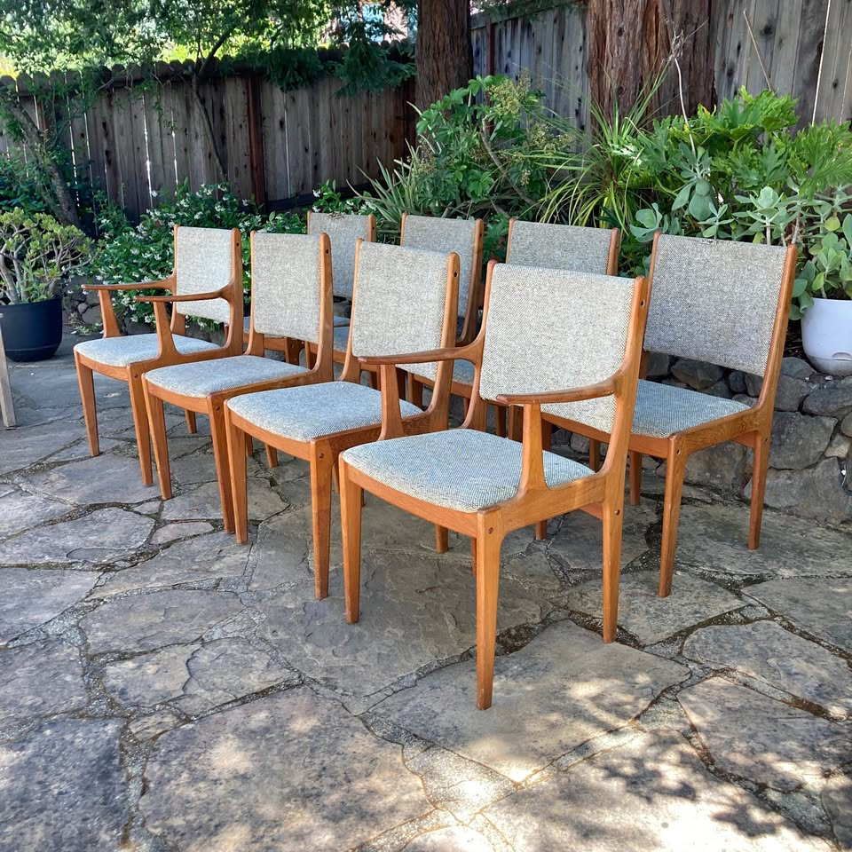
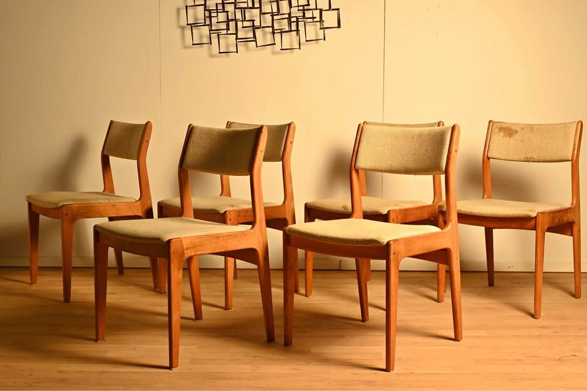

461 Anderson — Dining Table Watch
Mid-century modern · extendable to seat 8 · Danish teak/walnut preferred · driveable from the Bay Area
Updated July 5, 2026Current, click-verified, in-budget picks only · ★ value = price vs. quality
⚡ Look at right away
- Top pick — re-verified active today, message the seller: the Vejle Stole Og Møbelfabrik teak draw-leaf, $1,200 (Craigslist by owner, Santa Rosa) — four straight tapered legs (not pedestal/trestle) and honey-teak top confirmed in the listing photos. Priority Danish maker, likely a Henning Kjærnulf design, Made in Denmark, 64.5" → 107.5" on two self-storing matching-teak leaves (seats 8–10). Well under budget; still live through ~Jul 31. Roughly an hour's drive north — the standout on the board.
- Still-active runner-up: the refinished Danish teak draw-leaf, $1,499 (Enliven, Emeryville) — re-verified active today, four legs, extends to 94", seats 8, live through ~Jul 25.
- Both picks are click-verified active, four-leg, solid teak, matching-wood leaves, and in budget, with stable Craigslist photos. No price changes and nothing expiring soon — no action forced this run.
- Facebook Marketplace was not scanned this run (no signed-in browser session was available for the automated run), so only Craigslist was swept. No new in-budget four-leg Danish tables turned up on Craigslist.
Budget $1,000–$2,000 · extends to ≥84" · Danish teak/walnut/rosewood · four legs (no pedestal/trestle)
Tables · in budget

Vejle Stole Og Møbelfabrik Teak Draw-Leaf Dining Table — Made in Denmark
A priority Danish maker (likely a Henning Kjærnulf design) reaching over 107" for $1,200 — the best price-to-quality on the board. Refinished, structurally sound; one honestly-disclosed repaired corner is the only knock.

Danish Modern Teak Expandable Dining Table (Refinished)
Clean refinished teak with a matching draw-leaf, extends to 94". A dealer piece (Enliven) — fairly priced and in budget, just without a named priority maker.
⚡ Chairs — quick read
- Easiest win: the Set of 8 Danish teak, $1,600 (San Rafael) is already in a clean light woven fabric, comes with free Bay Area delivery, and gives you 6 + 2 spares. Best fit for "6 in an easy clean fabric."
- Best match to the table: the Set of 6 D-Scan teak, $1,200 (Novato) is a clean Scandinavian-style teak line that coordinates well with either table pick. Fabric is worn, so plan to recover the drop-in seats in an easy-clean fabric (a quick DIY).
- Note: chairs weren't re-verified this run (focus was tables) — confirm both are still active before driving out.
Budget $1,200–$2,400 for six · MCM teak/walnut that coordinates with the table · easy, clean fabric · driveable / delivers
Chairs · sets of 6+ · in budget

Set of 8 Danish Modern Teak Dining Chairs — Free Bay Area Delivery
Eight solid teak chairs (incl. 2 captains) already in a clean light woven fabric, ~$200/chair, and free delivery. Covers six with spares — the lowest-hassle path to a clean-fabric set.

Set of 6 D-Scan Teak Dining Chairs
Exactly six in a clean Scandinavian-style teak line that coordinates with either table pick. Fabric is tired, so budget a recover.